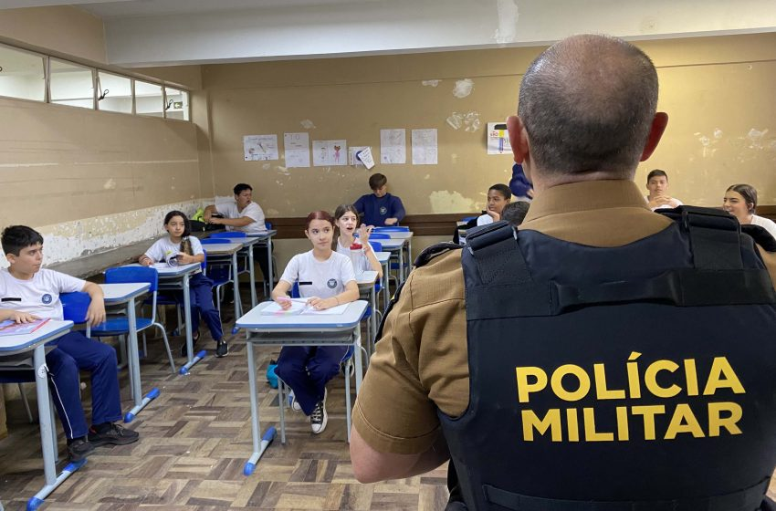

Polícia, catraca, botão do pânico e mais: veja análise as medidas em debate contra ataques em escolas
Em São Paulo, o governador estuda criar um programa de policiamento permanente nas escolas. No Rio, Claudio Castro anunciou o desenvolvimento de um aplicativo com um "botão de pânico".
Rondas policiais, catracas e detectores de metal na porta e até aplicativo de celular com botão de pânico são alternativas discutidas como medidas de segurança contra ataques em escolas, como os ocorridos nesta terça-feira (11) em Goiás, e dias atrás em Blumenau (SC) e São Paulo. Alguns desses métodos têm sido considerados por governos estaduais e devem estar também na mesa de debate do grupo interministerial coordenado pelo Ministério da Educação (MEC) para buscar soluções sobre o tema.
